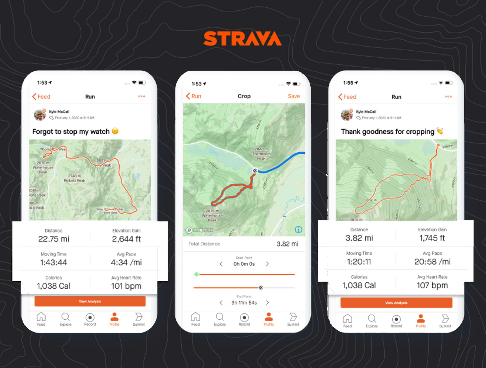

Strava has increased the price of its subscription service from £6.99 to £8.99 for monthly subscribers, with the annual subscription increasing from £47.99 to £54.99. Strava’s subscription service brings access to advanced features that aren’t available to free users, such as route planning, a training dashboard and, since May 2020, segment competition.
The updated pricing structure, which represents an increase of more than 25 per cent from the existing rate, is also in place for new subscribers, while those already on a monthly plan will see the price rise in their next bill, BikeRadar understands. Strava’s annual payment option, which has risen from £47.99 to £54.99, reduces the effective monthly cost to less than £5. Users can still access Strava for free, enabling them to track and share activities through the popular cycling app.
Rides can be recorded via a mobile phone, compatible smartwatch or bike computer, with the free version only offering Strava’s live-tracking beacon service on mobile phones. It is unclear if the increase relates only to users in the UK or if this is a global change. Strava is far from alone in pushing its prices up. Prices have soared across the cycling industry, with inflation, Covid-19 and, in the UK, Brexit all contributing factors. Strava’s increase also follows rises from other subscription services, such as Netflix and Amazon Prime. Streaming giant Netflix cited inflation as the reason behind its recent increase, while Amazon’s subscription rose from £7.99 to £8.99 a month in September. Some Strava users have reacted negatively on Twitter (including a number who appear to have been paying £5.99 a month previously), threatening to cancel subscriptions. We have contacted Strava for comment and will update this article once we have a response.Source Back to news